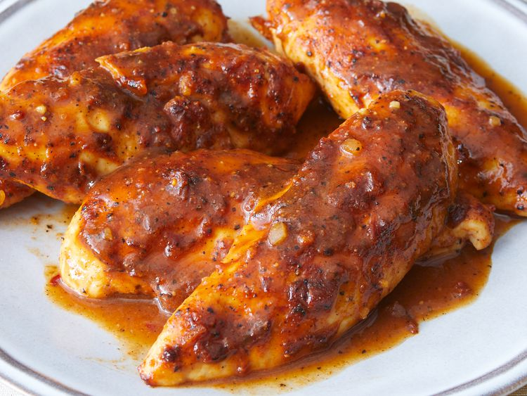

BBQ Chicken Tenders

Description
These BBQ tenders have a barbecue base but are elevated with a decidedly Asian influence.
Ingredients
- cooking spray
- ⅓ cup barbeque sauce (such as Sweet Baby Ray's® Hickory & Brown Sugar)
- 1 ½ tablespoons Asian-flavored barbeque seasoning (such as Savory Spice® Asian Delight BBQ Rub)
- 1 tablespoon caramel sauce
- 1 pound chicken tenders
Directions
- Gather all ingredients. Preheat the oven to 375 degrees F (190 degrees C). Spray an 8x8-inch casserole dish with cooking spray.
- Stir together barbeque sauce, barbeque seasoning, and caramel sauce in a shallow dish until combined. Reserve 2 tablespoons mixture for basting.
- Dip each chicken tender into barbeque sauce mixture; coat thoroughly. Place in the prepared casserole dish.
- Bake in the preheated oven until chicken is no longer pink in the center and the juices run clear, about 25 minutes. Baste with reserved sauce and bake 5 minutes more. An instant-read thermometer inserted into the center should read at least 165 degrees F (74 degrees C).